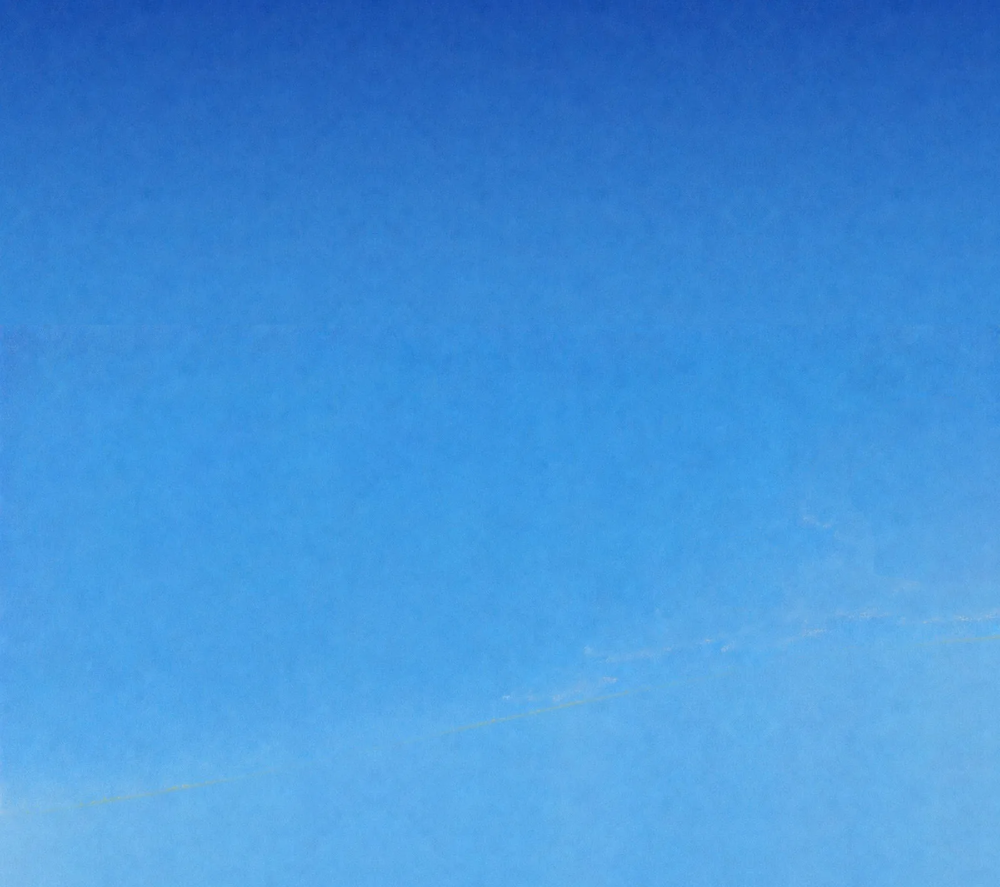
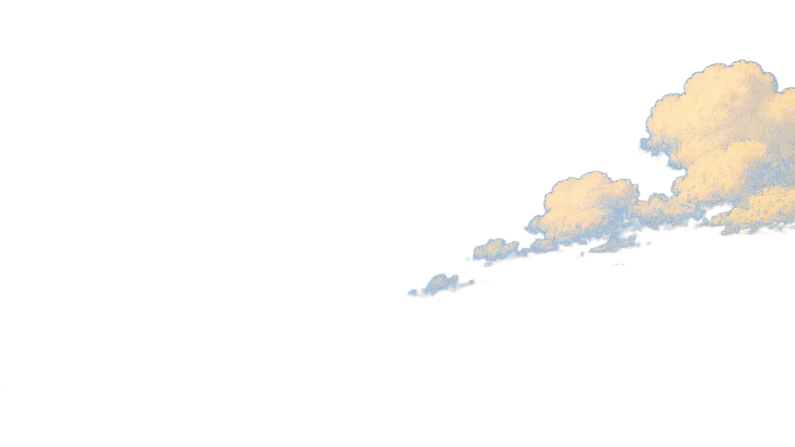
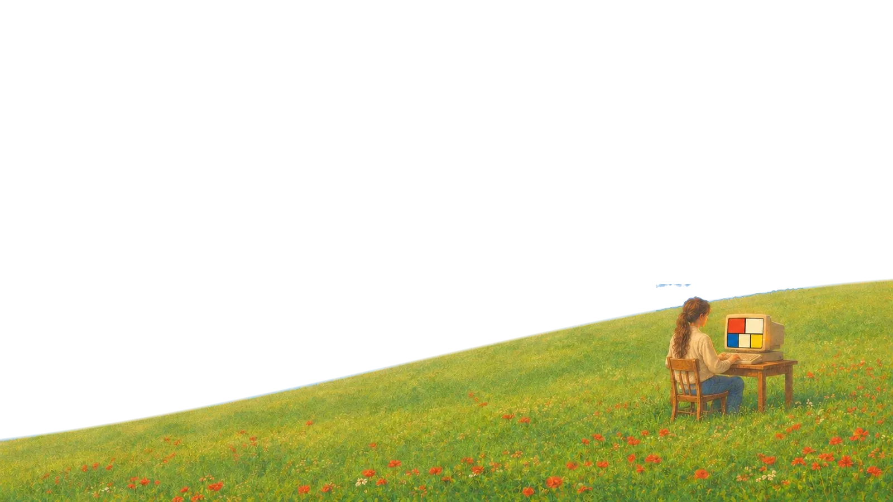
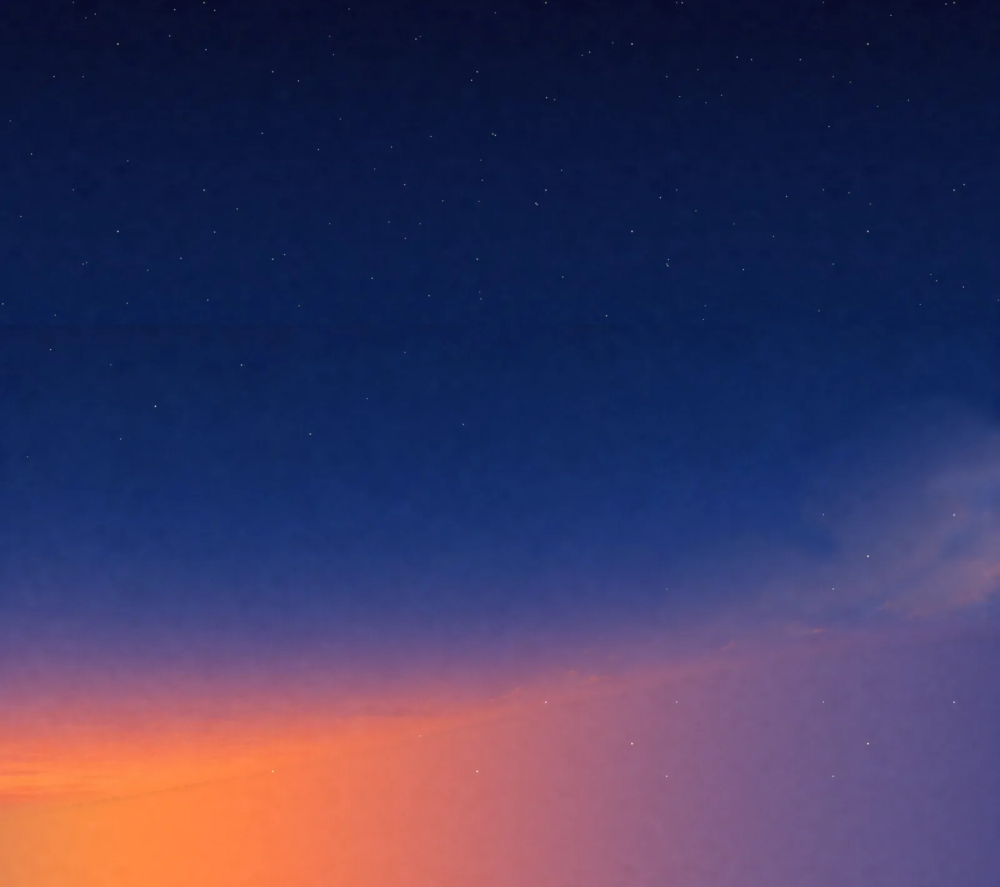
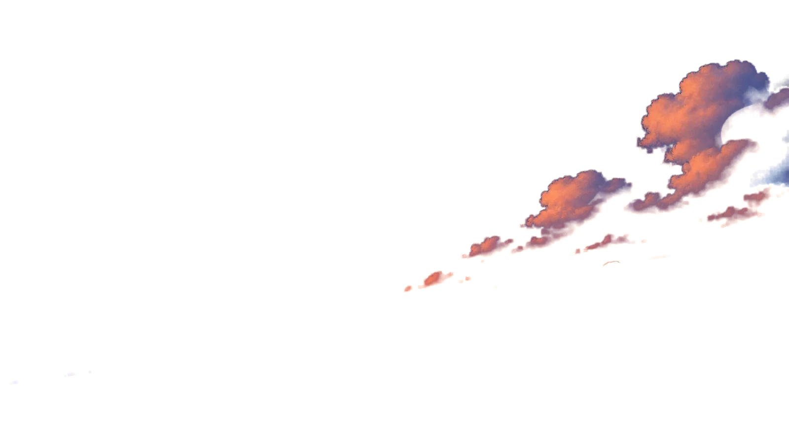
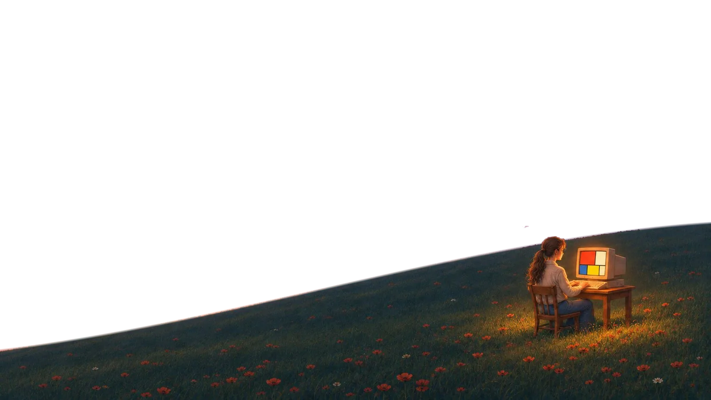

Saved as files, rendered anywhere, yours to keep.
Starts high in the sky; the clouds rise into view, then the hill, which moves furthest because it is nearest. Copy and the sign-in box arrive as the camera settles. With reduced motion turned on, the page appears in its final state.